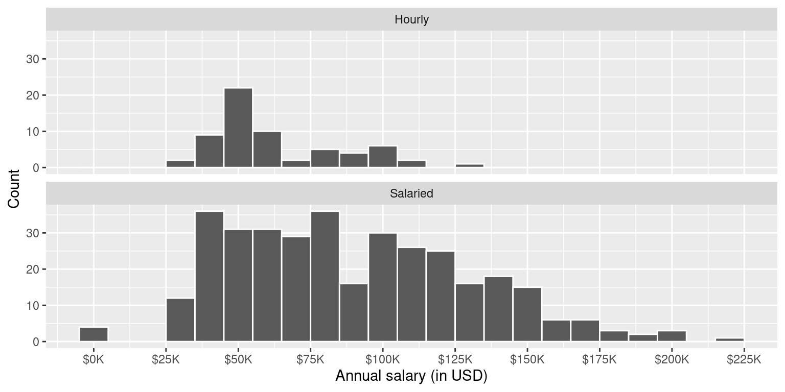
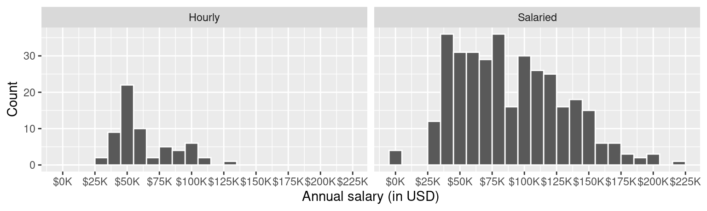
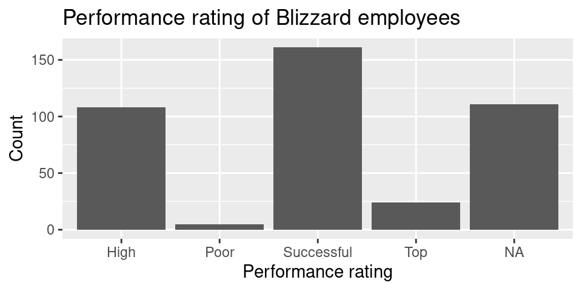
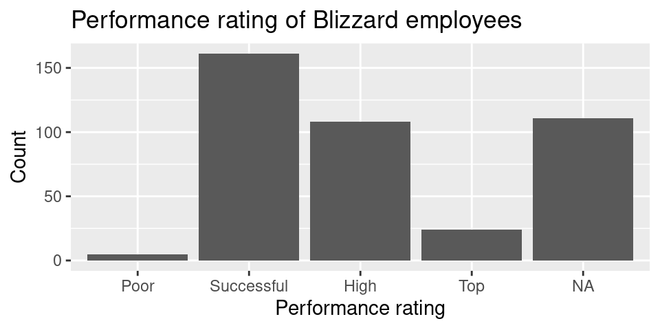
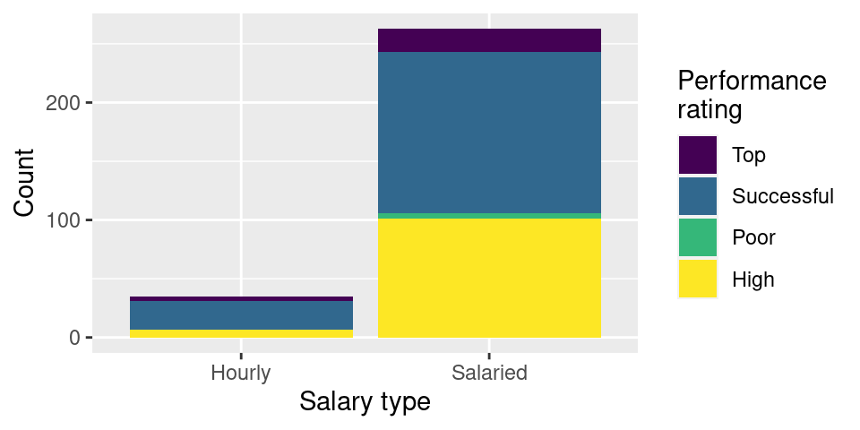
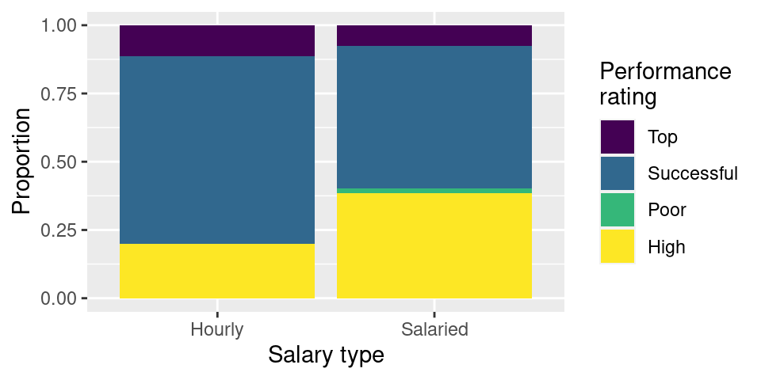
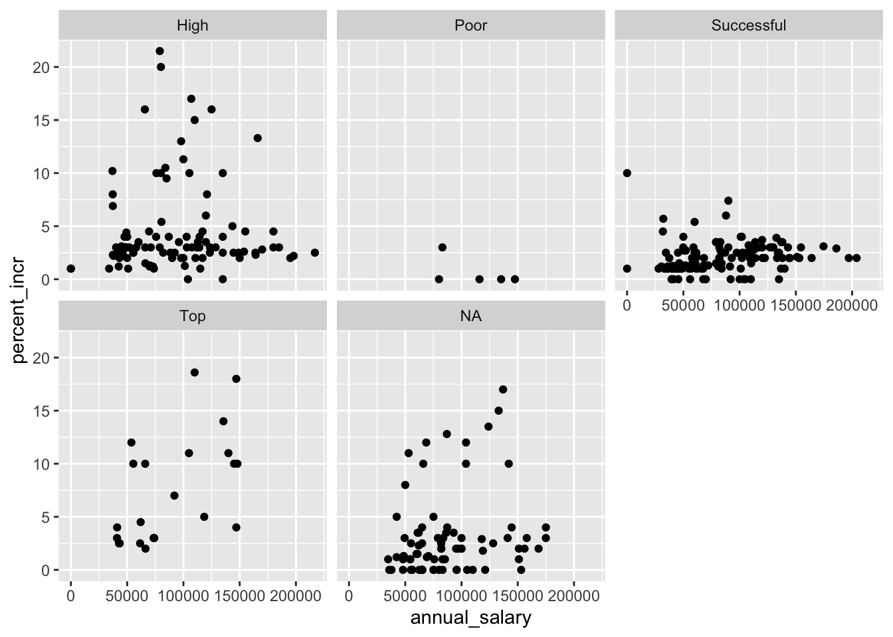
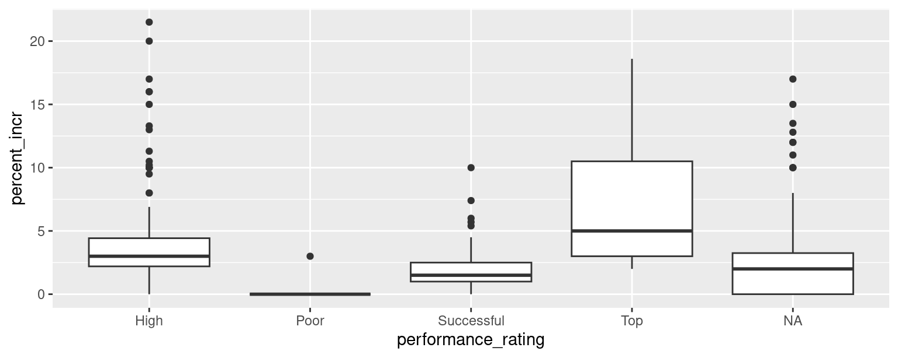

# A tibble: 409 × 4
percent_incr salary_type annual_salary performance_rating
<dbl> <chr> <dbl> <chr>
1 1 Salaried 1 High
2 1 Salaried 1 Successful
3 1 Salaried 1 High
4 1 Hourly 33987. Successful
5 NA Hourly 34798. High
6 NA Hourly 35360 <NA>
7 NA Hourly 37440 <NA>
8 0 Hourly 37814. <NA>
9 4 Hourly 41101. Top
10 1.2 Hourly 42328 <NA>
# ℹ 399 more rowsExam 1 Review
In 2020, employees of Blizzard Entertainment circulated a spreadsheet to anonymously share salaries and recent pay increases amidst rising tension in the video game industry over wage disparities and executive compensation. (Source: Blizzard Workers Share Salaries in Revolt Over Pay)
The name of the data frame used for this analysis is blizzard_salary and the variables are:
percent_incr: Raise given in July 2020, as percent increase with values ranging from 1 (1% increase to 21.5 (21.5% increase)salary_type: Type of salary, with levelsHourlyandSalariedannual_salary: Annual salary, in USD, with values ranging from $50,939 to $216,856.performance_rating: Most recent review performance rating, with levelsPoor,Successful,High, andTop. ThePoorlevel is the lowest rating and theToplevel is the highest rating.
The top ten rows of blizzard_salary are shown below:
Question 1
Which of the following is correct? Choose all that apply.
The
blizzard_salarydataset has 399 rows.The
blizzard_salarydataset has 4 columns.Each row represents a Blizzard Entertainment worker who filled out the spreadsheet.
The
percent_incrvariable is numerical and discrete.The
salary_typevariable is numerical.The
annual_salaryvariable is numerical.The
performance_ratingvariable is categorical and ordinal.
Question 2
Figure 1 (a) and Figure 1 (b) show the distributions of annual salaries of hourly and salaried workers. The two figures show the same data, with the facets organized across rows and across columns. Which of the two figures is better for comparing the median annual salaries of hourly and salaried workers. Explain your reasoning.


Question 3
Suppose your teammate wrote the following code as part of their analysis of the data.
They then printed out the results shown below. Unfortunately one of the numbers got erased from the printout. It’s indicated with _____ below.
# A tibble: 2 × 3
salary_type mean_annual_salary median_annual_salary
<chr> <dbl> <dbl>
1 Hourly 63003. 54246.
2 Salaried 90183. _____Which of the following is the best estimate for that erased value?
30,000
50,000
80,000
100,000
Question 4
Which distribution of annual salaries has a higher standard deviation?
Hourly workers
Salaried workers
Roughly the same
Question 5
Which of the following alternate plots would also be useful for visualizing the distributions of annual salaries of hourly and salaried workers? Choose all that apply.
a. Box plots
b. Density plots
c. Pie charts
d. Waffle charts
e. Histograms
f. Scatterplots
Questions 6 and 7
Suppose you made the bar plot shown in Figure 2 (a) to visualize the distribution of performance_rating and your teammate made the bar plot shown in Figure 2 (b).


You made your bar plot without transforming the data in any way, while your friend did first transform the data with code like the following:
blizzard_salary <- blizzard_salary |>
_(1)_(performance_rating = fct_relevel(performance_rating, _(2)_))Question 6: What goes in the blank (1)?
arrange()filter()mutate()summarize()
Question 7: What goes in the blank (2)?
"Poor", "Successful", "High", "Top""Successful", "High", "Top""Top", "High", "Successful", "Poor"Poor, Successful, High, Top
Questions 8 - 10
Finally, another teammate creates the following two plots.


Question 8: Your teammate asks you for help deciding which one to use in the final report for visualizing the relationship between performance rating and salary type. In 1-3 sentences, can you help them make a decision, justify your choice, and write the narrative that should go with the plot?
Question 9: A friend with a keen eye points out that the number of observations in Figure 3 (a) seems lower than the total number of observations in blizzard_salary. What might be going on here? Explain your reasoning.
Question 10: Below are the proportions of performance ratings for hourly and salaried workers. Place these values in the corresponding segments in Figure 3 (b).
# A tibble: 4 × 3
performance_rating Hourly Salaried
<chr> <dbl> <dbl>
1 High 0.2 0.384
2 Successful 0.686 0.521
3 Top 0.114 0.0760
4 Poor 0 0.0190Questions 11 and 12
The table below shows the distribution of salary_type and performance_rating.
# A tibble: 2 × 6
salary_type Poor Successful High Top `NA`
<chr> <int> <int> <int> <int> <int>
1 Hourly NA 24 7 4 28
2 Salaried 5 137 101 20 83The pipeline below produces a data frame with a fewer number of rows than blizzard_salary.
blizzard_salary |>
filter(salary_type _(1)_ "Hourly" _(2)_ performance_rating == "Poor") |>
_(3)_(annual_salary)# A tibble: 5 × 4
percent_incr salary_type annual_salary performance_rating
<dbl> <chr> <dbl> <chr>
1 0 Salaried 80000 Poor
2 3 Salaried 83000 Poor
3 0 Salaried 116000 Poor
4 0 Salaried 135219 Poor
5 0 Salaried 147500 Poor Question 11: Which of the following goes in blanks (1) and (2)?
| (1) | (2) | |
|---|---|---|
| a. | != |
| |
| b. | == |
& |
| c. | != |
& |
| d. | == |
| |
Question 12: Which function or functions go into blank (3)?
arrange()mutate()order()sort()
Question 13
You’re reviewing another team’s work and they made the following visualization:

And they wrote the following interpretation for the relationship between annual salary and percent increase for Top performers:
The relationship is positive, having a higher salary results in a higher percent increase. There is one clear outlier.
Which of the following is/are the most accurate and helpful) peer review note for this interpretation. Choose all that apply.
The interpretation is complete and perfect, no changes needed!
The interpretation doesn’t mention the direction of the relationship.
The interpretation doesn’t mention the form of the relationship, which is linear.
The interpretation doesn’t mention the strength of the relationship, which is somewhat strong.
There isn’t a clear outlier in the plot. If any points stand out as potential outliers, more guidance should be given to the reader to identify them (e.g., salary and/or percent increase amount).
The interpretation is causal – we don’t know if the cause of the high percent increase is higher annual salary based on observational data. The causal direction might be the other way around, or there may be other factors contributing to the apparent relationship.
Question 14
Below is some code and its output.
```{r}
# label=plot blizzard
ggplot(blizzard_salary,aes(x=performance_rating,y=percent_incr))+geom_boxplot()
labs(x="Performance rating", y = "Percent increase")
```Warning: Removed 39 rows containing non-finite values (`stat_boxplot()`).
$x
[1] "Performance rating"
$y
[1] "Percent increase"
attr(,"class")
[1] "labels"Part 1: List at least 5 things that should be fixed or improved in the code.
Part 2: What is the cause of the warning and what does it mean?
Question 15
You’re working on a data analysis on salaries of Blizzard employees in a Quarto document in a project version controlled by Git. You create a plot and write up a paragraph describing any patterns in it. Then, your teammate says “render, commit, and push”.
Part 1: What do they mean by each of these three steps. In 1-2 sentences for each, explain in your own words what they mean.
- Render:
- Commit:
- Push:
Part 2: Your teammate is getting impatient and they interrupt you after you rendered and committed and say “I still can’t see your changes in our shared GitHub repo when I look at it in my web browser.” Which of the following answers is the most accurate?
I rendered my document, you should be seeing my changes on GitHub when you look at it in your web browser.
I committed my changes, you should be seeing my changes on GitHub when you look at it in your web browser.
I didn’t yet push my changes, it’s expected that you are not seeing them on GitHub when you look at it in your web browser. Wait until I push, and check again.
You need to pull to see my changes on GitHub in the web browser.
Bonus
Pick a concept we introduced in class so far that you’ve been struggling with and explain it in your own words.